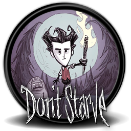

Don't Starve
Don't Starve est un jeu vidéo de survie développé par Klei Entertainment. Il est disponible en téléchargement sur PC depuis 2013. Un contenu téléchargeable intitulé Reign of Giants est sorti le 30 avril 2014 et une extension multijoueur, Don't Starve Together suivit le 15 décembre 2014. Reformaté pour la PlayStation 4, il prend le nom de Don't Starve: Console Edition en janvier 2014. Une version PlayStation Vita paraît en septembre de la même année alors que celles adaptées à la Wii U, la PlayStation 3 et la Xbox One suivent au courant de l'année 2015 sous le nom de Don't Starve: Giant Edition reprenant sur consoles les améliorations apportées par l'extension Reign of Giants.
Le joueur incarne un scientifique nommé Wilson qui se retrouve dans un monde sombre et hostile dans lequel il doit survivre le plus longtemps possible, en ramassant des ressources naturelles, en fabriquant divers objets (séchoirs à viande, pièges à animaux, armes et outils, etc.) et en se battant contre des ennemis. Le mode "Aventure" du jeu ajoute quelques éléments scénaristiques et oppose Wilson à l'antagoniste Maxwell.
De nombreuses mises à jour ont été développées après la parution du jeu de base, permettant à l'univers de s'enrichir régulièrement de nouveaux objets, décors, créatures et personnages.